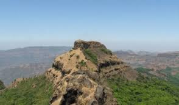
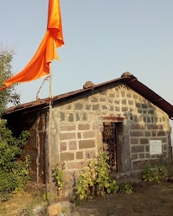

मधुमकरंद किल्ला
Location : Click Here For Google Map
- माहिती
- मधुमकरंद किल्ला महाराष्ट्र राज्याच्या पुणे जिल्ह्यात स्थित एक ऐतिहासिक किल्ला आहे. हा किल्ला विशेषतः त्याच्या उंचावरून दिसणाऱ्या अप्रतिम दृश्यांसाठी ओळखला जातो. किल्ला सुमारे ३००० फूट उंचीवर आहे आणि त्याच्या शिखरावर चढण्यासाठी एक रोमांचक चढाई असते. किल्ल्याच्या भिंती आणि बुरुज आजही अस्तित्वात आहेत आणि किल्ल्याच्या स्थापत्याचे महत्त्व दर्शवितात.
किल्ल्याचा इतिहास मराठा साम्राज्याच्या स्थापनेच्या कालखंडाशी संबंधित आहे. किल्ल्यावर छत्रपती शिवाजी महाराजांच्या वेळी तगडी लढाई झाली होती. किल्ल्याची स्थापत्यकला त्याच्या सुरक्षेच्या दृष्टीने आदर्श होती आणि त्याच्या भिंती तसेच बुरुज त्याकाळच्या सैन्य रचनेचे उत्कृष्ट उदाहरण आहेत.
मधुमकरंद किल्ल्याचा इतिहास, त्याची स्थापत्यकला, तसेच शिखरावरून दिसणारा निसर्ग सौंदर्य पर्यटकांसाठी एक आकर्षण आहे. किल्ल्यावर चढून त्या परिसराची सुंदर दृश्ये पाहणे एक अद्वितीय अनुभव आहे.
Explore the historical beauty

